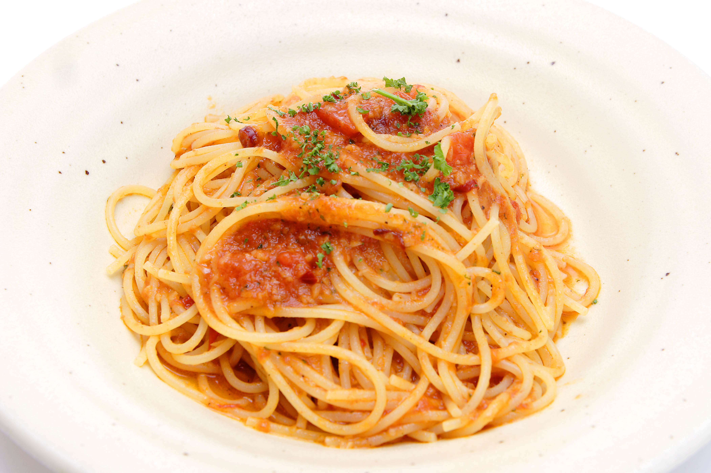

トマトパスタ

材料 2人分
- パスタ
- 2人分
- ホールトマト缶
- 1缶
- にんにく
- 大きめ2片
- ベーコン
- 6～8枚
- 鷹の爪
- 1本
- オリーブオイル
- 大さじ5
- 白ワイン
- 大さじ4
- 塩胡椒
- 適量
- パセリ
- 適量
作り方
1
フライパンにみじん切りのにんにく、オリーブオイル、細切りのベーコンを入れ中強火で炒めます。
2
ベーコンから油が出てカリカリになってきたら白ワインを入れ、少ししたら鷹の爪そのままとホールトマトを握り潰しながら入れます。
3
ベーコンの塩加減にもよりますがお塩は小さじ1/3、こしょう少々で味付けをします。
ここではかなり薄めの塩加減です。
4
5分位中火で煮た時点で弱火にし、パスタを茹でます。
パスタを茹でている間に煮詰めます。
5
茹で上がったパスタをしっかり水を切ってフライパンに入れ、ソースとからめます。
器に盛り、パセリを適量振りかければ完成です。